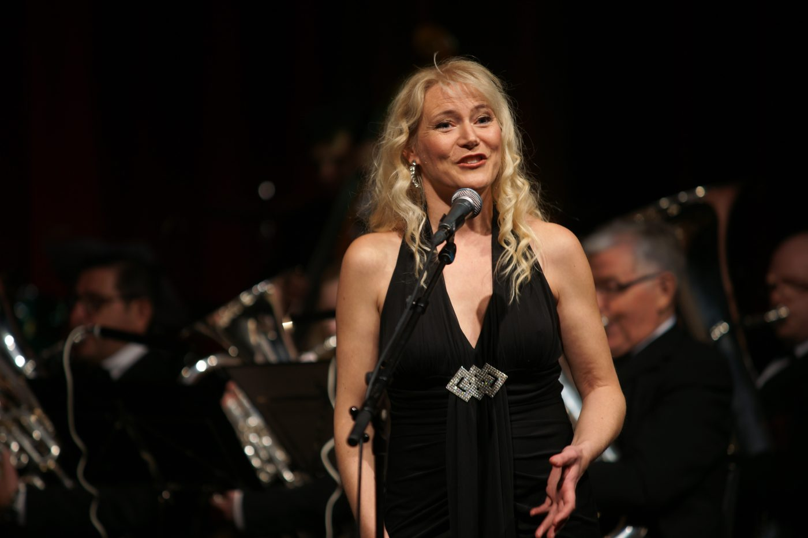
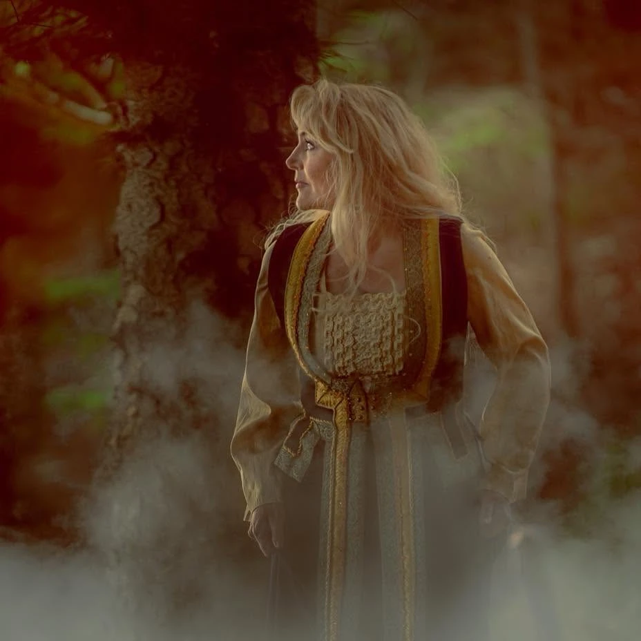
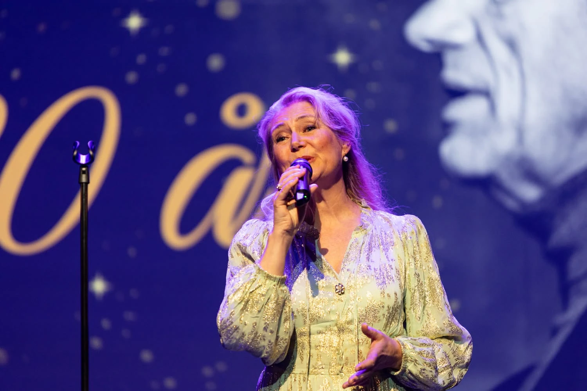

I / V
ÁLFR
En nordlyskonsert
En nordlyskonsert der vakker musikk møter spektakulære bilder av nordlys og norsk natur.
- Tidligere fremført
- Forum Scene Bergen · KIPO, Askøy
- Neste konsert
- Ny konsert planlegges – dato kommer



Om Marianne
– til konserter, seremonier og anledninger der musikken skal bety noe.
Marianne Juvik Sæbø er en erfaren sopran og solist fra Askøy, utdannet ved Griegakademiet og Royal Academy of Music i London. Med en varm, bærende stemme og et repertoar som spenner fra klassisk musikk, salmer og folketoner til jazz, musikal, gospel og opera, skaper hun øyeblikk publikum husker.
Marianne kan bookes til konserter, kirkelige seremonier, bryllup, begravelser, minnestunder, festivaler og private arrangementer – alene, med pianist eller sammen med kor og orkester. Hun samarbeider tett med hver oppdragsgiver om musikk som passer anledningen, enten stemningen skal være høytidelig, trøstende, lys eller storslått.
En stemme med kraft og varme. En formidler som får publikum til å lytte.
For arrangører · Konsertprogrammer
Dette er ferdige konsertprogrammer som Marianne kan sette opp hos deg – i kirken, kulturhuset, på festivalen eller ved et privat arrangement. Det er ikke konserter med billettsalg: du bestiller konserten og betaler honorar, og så avtaler dere sted og dato. Hun synger også sammensatte program med gospel, folketoner, salmer og viser. Spør om pris og ledige datoer.
I / V
En nordlyskonsert
En nordlyskonsert der vakker musikk møter spektakulære bilder av nordlys og norsk natur.

II / V
Konsertprogram og album
Et konsertprogram med Marianne Juvik Sæbø, også utgitt som album.

III / V
Tekst Arne Garborg · musikk Edvard Grieg
Mariannes egen sceniske versjon av Grieg og Garborgs Haugtussa, med samplede lyder fra naturen.

IV / V
To vestlandsdiktere i musikk
Tekster av Olav H. Hauge og Jakob Sande, med musikk av Per Indrehus.

V / V
Salmekonsert
En salmekonsert med mannskor og kammerorkester, eller med pianist og en blåser.
Konserter
2026 – 2027
Søndag · Bergen
Universitetets Symfoniorkester
Marianne er solist (sopran). Musikk av Sibelius, Lindberg, Grieg, Indrehus, Groven og Maia Husa Kaland. Dirigent Bjørn Breistein.
Planlegges
Ny konsert planlegges – dato kommer. Tidligere fremført på Forum Scene Bergen og i KIPO på Askøy.
Følg med
Nye datoer legges ut her.
Musikk og utgivelser
Et utvalg innspillinger og musikkprosjekter. Lytt videre på Spotify.


Kontakt · Booking
Ta kontakt for sangoppdrag, konserter, seremonier, begravelser eller samarbeid.